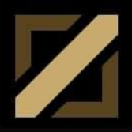
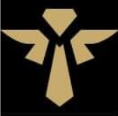

-
탑탑신병자
다른 라인에 비해 라인전 단계에서 게임에 미치는 영향력이 약하다. 초반에 가장 중요한 오브젝트인 용은 밑에 있다
-

미드개버러지
라인 하나의존재감이 곧 맵 전체에 영향력을 끼칠 수 있다 보니 소환사의 협곡에서 통칭되는 모든 지역 라인과 라이너들 중에서도 사실상 의미와 가치가 상당히 높다.
-

정글백정
소환사의 협곡에서 EU 스타일 포지션상 정글이라는 중립 지역을 중점으로 운용하는 포지션이다.
-
바텀숟가락
EU 메타와 소환사의 협곡의 구역 중 하단 라인에서 서포터와 듀오를 이루는 라이너를 지칭한다.
-

서폿도구
소환사의 협곡 기준에서 팀을 전체적으로 보조하고, 원딜/비원딜을 비롯한 하단 (캐리) 라이너를 보조해주는 역할군이자 포지션이다.